+ CURSO MÁS ELEGIDO
Construí tu propia guitarra criolla
Diseñá y construí una guitarra hecha con tus propias manos, recorriendo cada etapa del proceso artesanal.
$560.000 6 cuotas sin interés
+ ¿QUÉ INCLUYE?
Todo lo necesario para aprender el oficio
MATERIALES
Materiales seleccionados
Trabajá con maderas y componentes de alta calidad seleccionados para tu proyecto.
DOCENTES
Acompañamiento
Contá con el seguimiento personalizado de luthiers expertos en cada etapa del proceso.
HERRAMIENTAS
Taller equipado
Utilizá herramientas específicas y profesionales de luthería durante toda la cursada.
+ SOBRE EL CURSO
Construí una guitarra desde cero
Durante el curso desarrollarás las técnicas, el criterio y la precisión necesarios para construir una guitarra criolla desde cero.
Trabajarás con materiales reales, herramientas profesionales y el acompañamiento permanente de luthiers especializados que te guiarán en cada etapa del proceso.
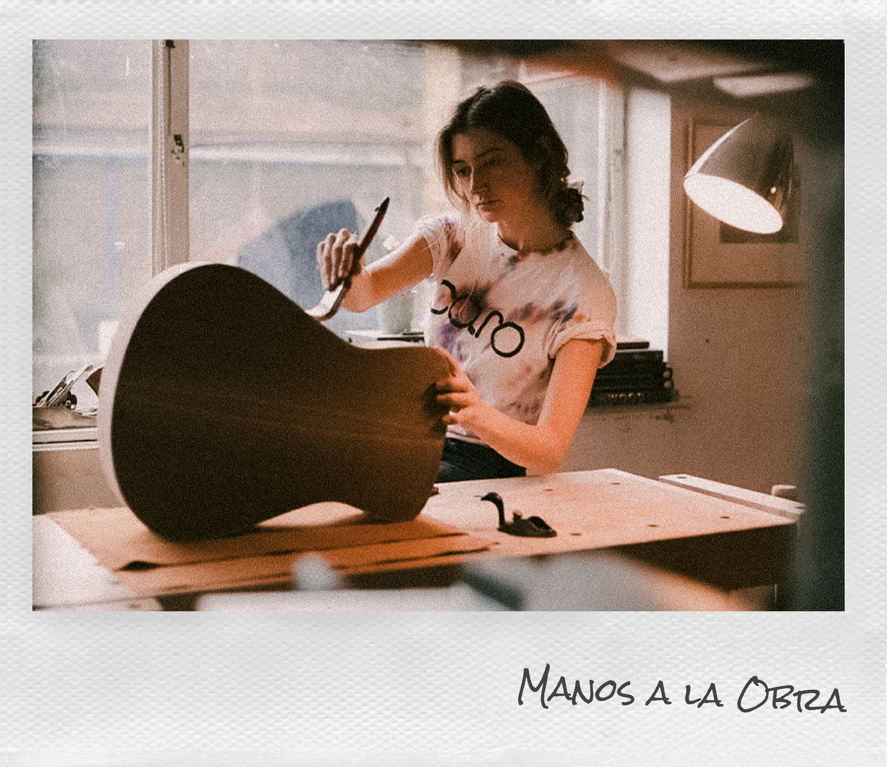
+ RECORRIDO DEL CURSO
Cada etapa construye el resultado
A lo largo del curso recorrerás las principales etapas de la construcción de una guitarra criolla, desde la selección de los materiales hasta la calibración final.
01. Fundamentos de la luthería
Conocé las bases del oficio y familiarizate con las herramientas, los materiales y las técnicas esenciales. Aprenderás a comprender la función de cada componente de la guitarra y cómo cada decisión influye en el resultado final del instrumento.
02. Construcción
Desarrollá paso a paso el cuerpo, el mástil y las principales piezas de la guitarra criolla. Aplicarás técnicas de corte, moldeado, encolado y ensamblado, siempre acompañado por el docente para garantizar un proceso preciso.
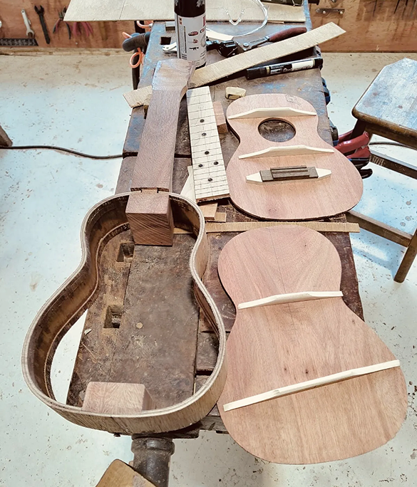
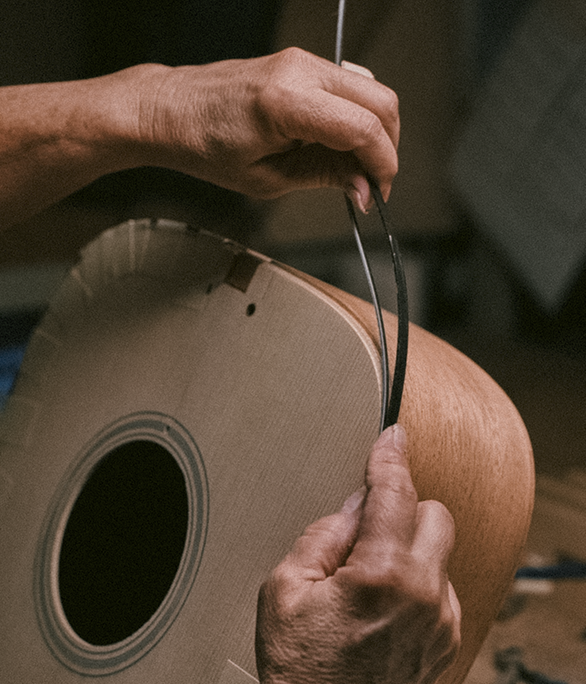
03. Terminaciones
Diseño e incrustación de la roseta, filetes y binding. Lijado, aplicación de selladores y lacas. Cada terminación es trabajada a mano para que el instrumento tenga identidad propia.
04. Ajuste final
Ajuste del puente, cejuela y clavijero. Afinación y control de acción. Al terminar, te llevás la guitarra que construiste con tus propias manos, calibrada y lista para tocar.
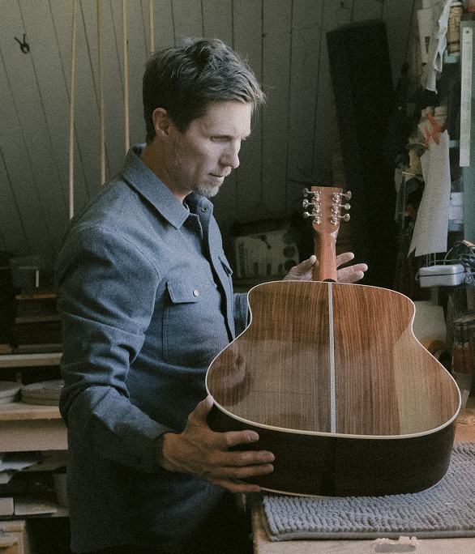

Juan Ortega
“El acompañamiento hizo que todo el proceso fuera mucho más simple.”
+ RESULTADO FINAL
Tu guitarra, hecha por vos.
Cada alumno termina el recorrido con un instrumento único, construido desde cero y listo para acompañarlo durante toda la vida.
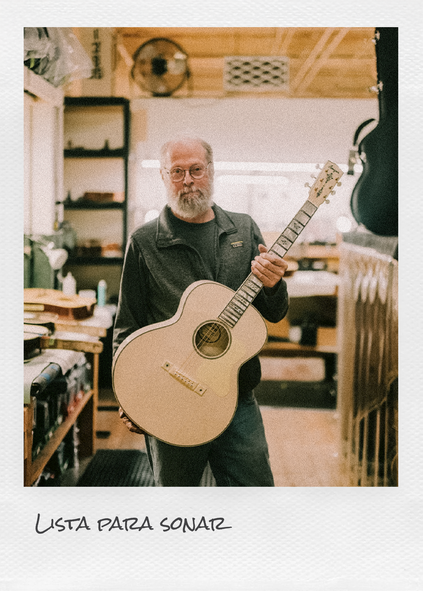
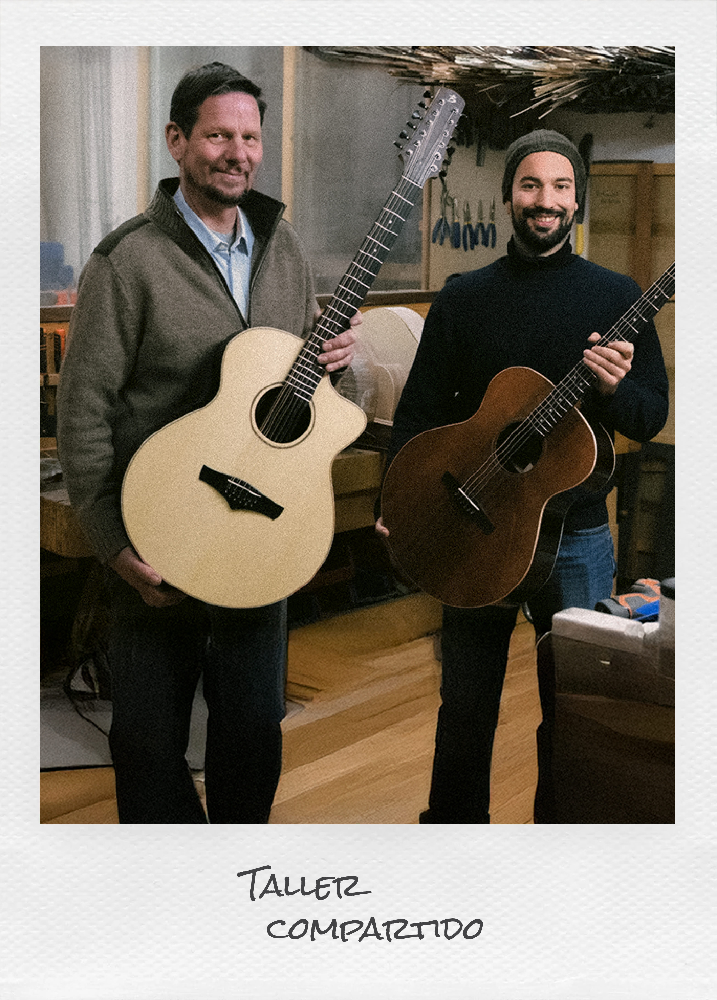
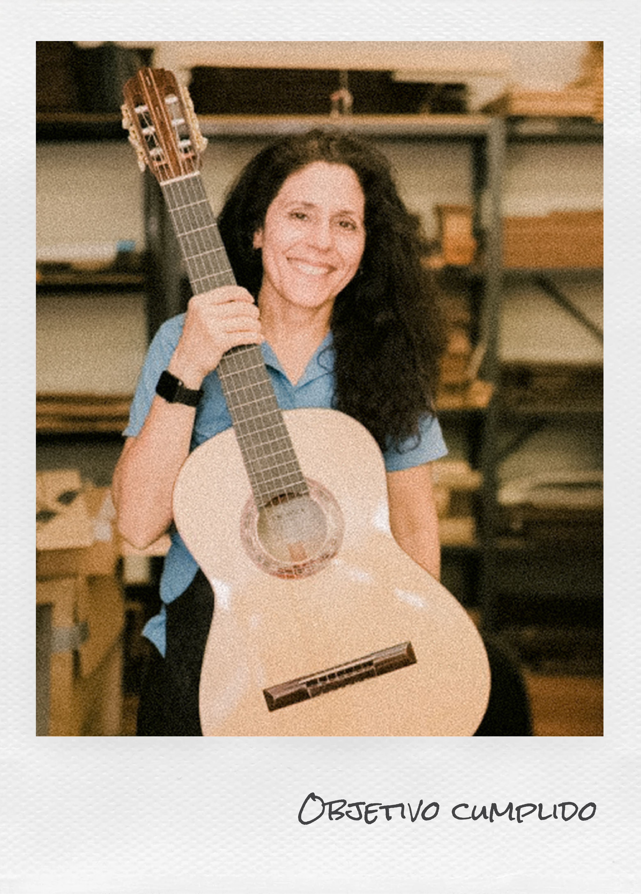
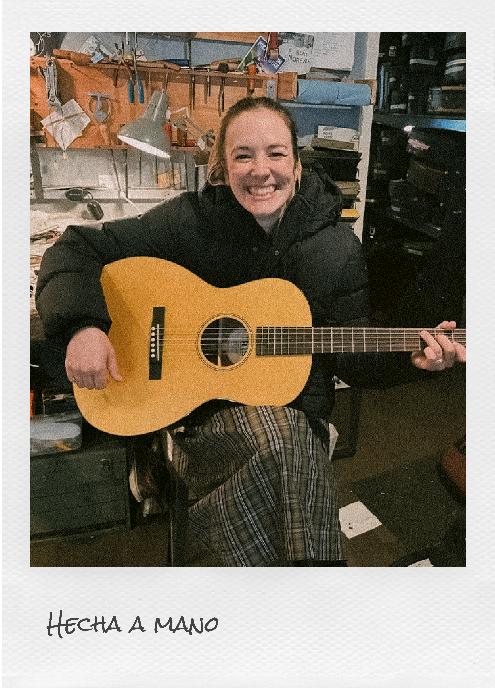
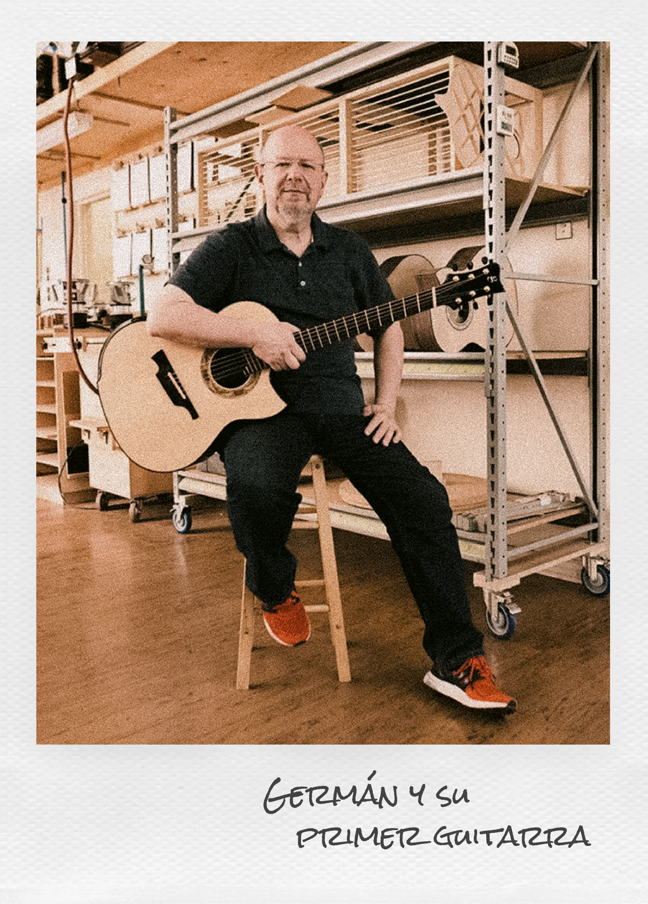
+ EQUIPO DOCENTE
Quienes hacen posible cada aprendizaje
Detrás de cada clase hay un equipo de luthiers dedicado a compartir el oficio, resolver cada desafío técnico y acompañarte durante todo el recorrido.
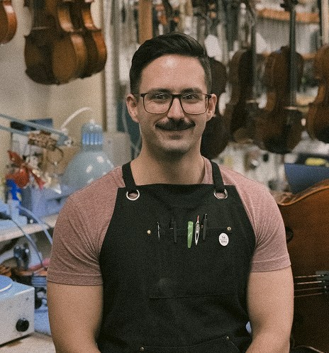
+ DIRECTOR Y MAESTRO LUTHIER
Jorge Talledo
Luthier con amplia trayectoria en guitarras de autor. Coordina el programa académico y guía a los alumnos en los procesos estructurales más complejos del oficio.
+ ESPECIALISTA EN ACÚSTICA
Rodrigo Beder
Luthier especializado en maderas nobles y calibración. Cuenta con más de ocho años guiando a alumnos en la creación de sus primeros instrumentos.
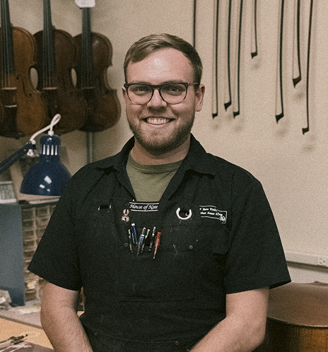
Tomás Casán
+ INSTRUCTOR DE TALLER
Artesano enfocado en la enseñanza de las técnicas de lutería tradicional. Acompaña el proceso diario en el taller, desde el tratamiento del material crudo hasta el acabado final.
+ PREGUNTAS FRECUENTES
Lo que querés saber antes de comenzar
Reunimos las consultas más frecuentes sobre la cursada, los materiales, la modalidad y el proceso de inscripción para que puedas conocer todos los detalles antes de comenzar.
No, el curso está pensado para principiantes. Arrancamos desde los fundamentos de la luthería y vas incorporando técnicas más avanzadas a medida que avanza la cursada, siempre acompañado por el docente.
Sí, el valor del curso incluye todas las maderas y materiales necesarios para construir tu guitarra, además del acceso completo a las herramientas del taller durante toda la cursada.
El curso es 100% presencial y se dicta los sábados y domingos de 9:00 a 13:00 hs en nuestro taller de Buenos Aires. Los cupos son reducidos para garantizar atención personalizada.
Podés reservar tu lugar completando el formulario de contacto. Un miembro del equipo se comunica con vos para coordinar el pago en cuotas y confirmar tu cupo en la próxima comisión.
Sí, la guitarra que construís durante la cursada es tuya. Al finalizar el proceso te la llevás terminada, calibrada y lista para tocar.
+ RESERVÁ TU LUGAR
¿Preparado para vivir la experiencia del taller?
Los cupos son limitados. Asegurá tu lugar en este taller o explorá el resto de nuestras propuestas de lutería.